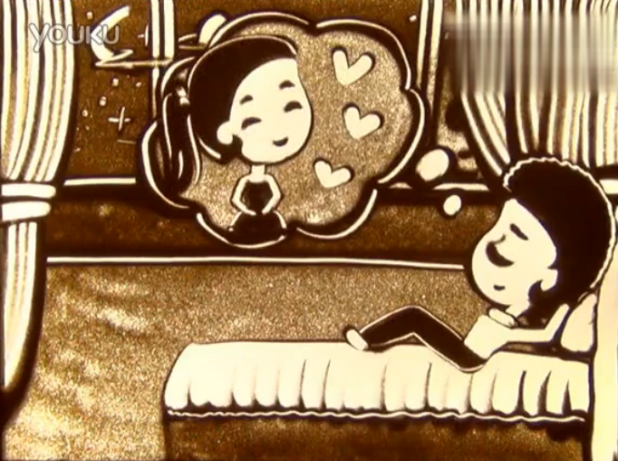
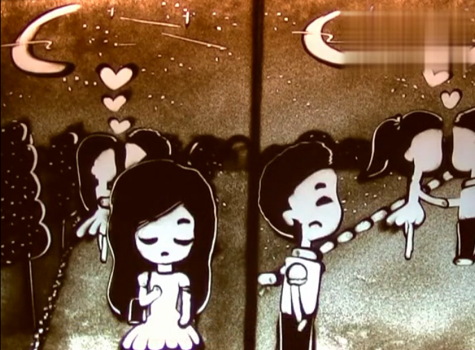
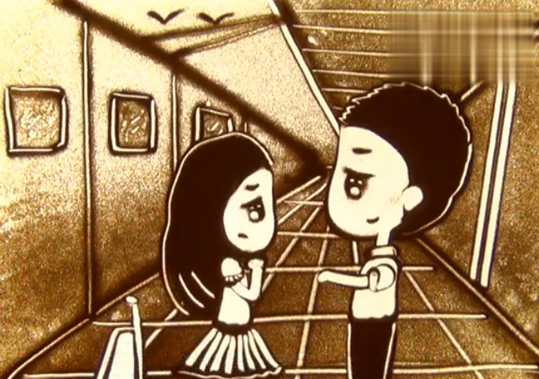
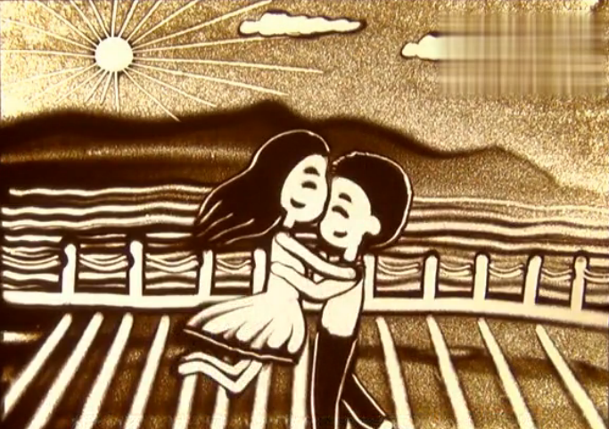
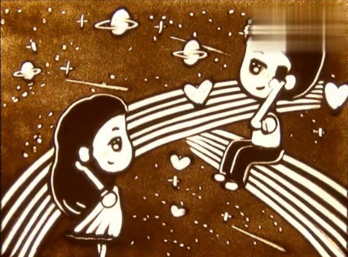
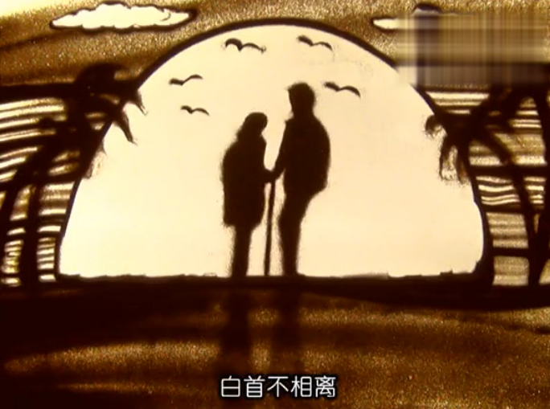

|  | 今夜 对着星空发呆
|
祈盼 对着手机发呆 |
 |
|  | 无数的想念 相见时难别亦难 |
电话里的声音 对着屏幕的你 |
 |
|  |
银河再宽 任性地相爱
杨伊玲
|
爱有时好奇妙，冥冥之中，死有一股力量在指引，有缘的人就算距离再远，也会走到一起，就那么莫名其妙的相爱了。
爱有时好简单，不需要丰厚的物质，也不需要太多赘述，简简单单的我爱你你爱我就已经可以诠释一切。
爱好疯狂，距离再远，外界再多的干扰，也无法让两颗心分离，一生一世只为你。
世界好微妙，形影不离的情侣在忍受着吵闹折磨，相隔两地的眷侣却饱受相思之苦。但愿人长久，珍惜眼前人，愿有情人成眷属。
